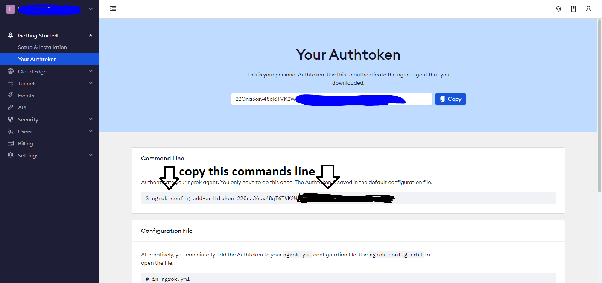
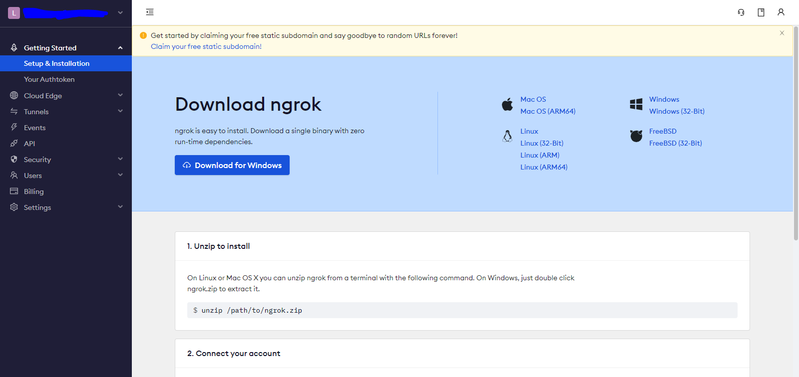

Fisrt You must to sign up in Ngrok
after sign up go to your Authtoken section

Copy your Authtoken
then go to setup section

then download ngrok for Windows
activation of Ngrok
After download Ngrok Open it

paste here the Authtoken line